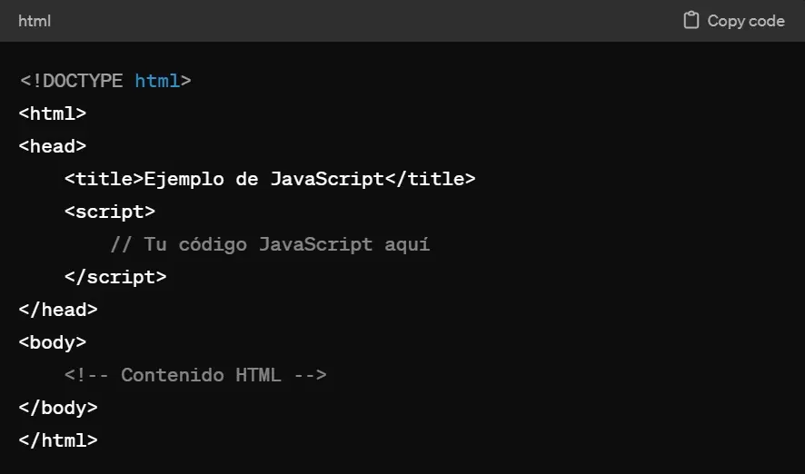

¿Qué es JavaScript?

JavaScript es un lenguaje de programación de alto nivel que se usa para hacer páginas web interactivas y dinámicas. Se ejecuta en el navegador del usuario y trabaja junto con HTML (estructura) y CSS (estilo) para crear la experiencia web moderna, manejando elementos como animaciones, formularios, contenido dinámico y juegos. Funcionalidades clave Interactividad: Permite responder a las acciones del usuario, como clics, movimientos del ratón o entradas de texto. Contenido dinámico: Puede cargar y actualizar contenido en una página sin necesidad de recargarla por completo, como en las redes sociales. Animaciones: Se utiliza para crear animaciones de imágenes y otros elementos de la página. Validación de formularios: Permite verificar si los datos ingresados por el usuario en un formulario son correctos antes de enviarlos al servidor. Juegos y multimedia: Es posible crear juegos y manejar la reproducción de audio y video. Cómo funciona en la web Lado del cliente: Se incrusta directamente en el código de una página web o se enlaza desde un archivo .js separado. El navegador del usuario descarga y ejecuta este código. Evolución a lado del servidor: Con el uso de entornos como Node.js, JavaScript también puede usarse en el lado del servidor (backend) para tareas como interactuar con bases de datos o procesar pagos, señala ebac.mx. Diferencia con Java Es importante no confundir JavaScript con Java; son dos lenguajes distintos con propósitos diferentes. JavaScript es un lenguaje de scripting interpretado que se ejecuta en el navegador, mientras que Java es un lenguaje compilado que se ejecuta en otros entornos.
¿Cómo utilizar JavaScript con HTML?
Para usar JavaScript con HTML, puedes enlazar un archivo .js externo en una etiqueta <script> dentro de tu documento HTML, o puedes escribir el código JavaScript directamente entre las etiquetas <script> . La etiqueta <script> se puede colocar tanto en la sección <head> como en el <body> del HTML, dependiendo de cuándo quieres que se cargue el código. 1. Enlazar un archivo de JavaScript externo Esta es la forma recomendada para la mayoría de los casos. Crea un archivo JavaScript: Crea un archivo con la extensión .js (por ejemplo, script.js) y escribe tu código JavaScript dentro de él. Enlaza el archivo en HTML: En tu archivo HTML, agrega una etiqueta <script> y usa el atributo src para apuntar al archivo .js. Es común colocar esta etiqueta justo antes de la etiqueta de cierre <body> para que el contenido HTML se cargue primero. html <DOCTYPE html> <html> <head> <title>Mi Página<titlegt;> <headgt;> <bodygt;> <h1gt;Hola Mundo<h1gt;> <script src script.js <script> <body> <html> 2. Escribir código JavaScript en línea Puedes escribir código directamente en el documento HTML. Inserta el código: Utiliza la etiqueta <script> y coloca tu código JavaScript directamente entre las etiquetas de apertura y cierre. html <DOCTYPE html> <html> <head> <title>Mi Página<title> <head> <body> <h1>Hola Mundo<h1> <script> // Este código se ejecutará en línea console.log("¡Hola desde JavaScript en línea!"); <script> <body> <html> Consideraciones adicionales Ubicación de la etiqueta <script> : Colocar el script en el <head> hace que se cargue antes que el contenido de la página, lo que es útil para scripts que deben ejecutarse temprano, como bibliotecas. Colocar el script al final del <body> evita que el script bloquee la carga de la página, lo cual es útil para scripts que interactúan con elementos del DOM. Atributos async y defer: Para mejorar el rendimiento, puedes usar async o defer en la etiqueta <script> para que la carga del script no bloquee la renderización de la página.